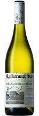
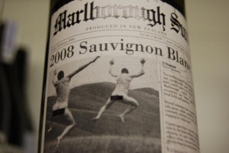
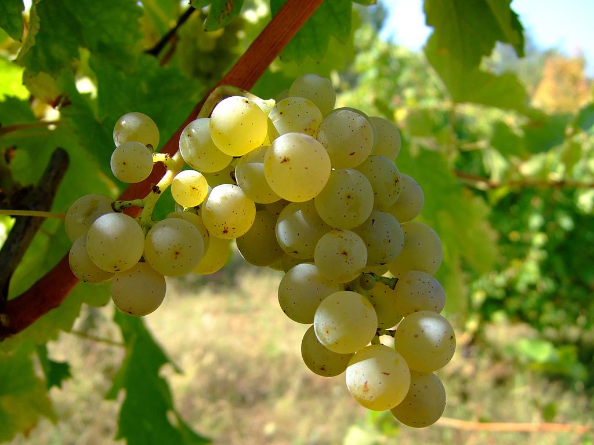

|  |
Белое вино Saint Clair Marlborough Sun Sauvignon Blanc привлекает ценой и отличным вкусом. Линейка Marlborough Sun выпускается с креативной этикеткой, на которой изображена газетная вырезка из "желтой прессы". Такой дизайн этикетки помог вину быть на слуху за пределами Новой Зеландии. Вино создано из ягод винограда сорта Совиньон Блан, которое тщательно отбирают вручную. Алкоголь перед разливом не выдерживается и не проходит фильтрацию, что дарит ему невероятную свежесть и естественный цвет. |

Так же для сохранности свойств, важно правильное хранение белого вина.
|
Совиньон-блан (фр. Sauvignon blanc, также встречается Sauvignon Blanc) — технический (винный) сорт винограда, используемый для производства белых вин. Один из самых распространённых и культивируемых сортов в мире. Относится к эколого-географической группе западноевропейских сортов винограда. Ныне распространён на всех континентах. По состоянию на начало XXI века сорт Совиньон-блан является вторым по распространению в мире среди белого винограда после шардоне. Вино, изготовленное из этого винограда, имеет специфический тёрпко-кисловатый привкус и аромат крыжовника или красной смородины. Родиной этого сорта винограда является долина Луары во Франции. В этой стране Совиньон Блан относят к «Cepages nobles», наиболее элитным виноградным сортам.Виноград Совиньон Блан появился в результате естественного скрещивания таких сортов, как Саваньен (он же траминер) и Шенен Блан. Мутациями Совиньон Блан являются виноградные сорта Sauvignon Gris (или Sauvignon Rose), Sauvignon Noir и Sauvignon Violet. |
 |